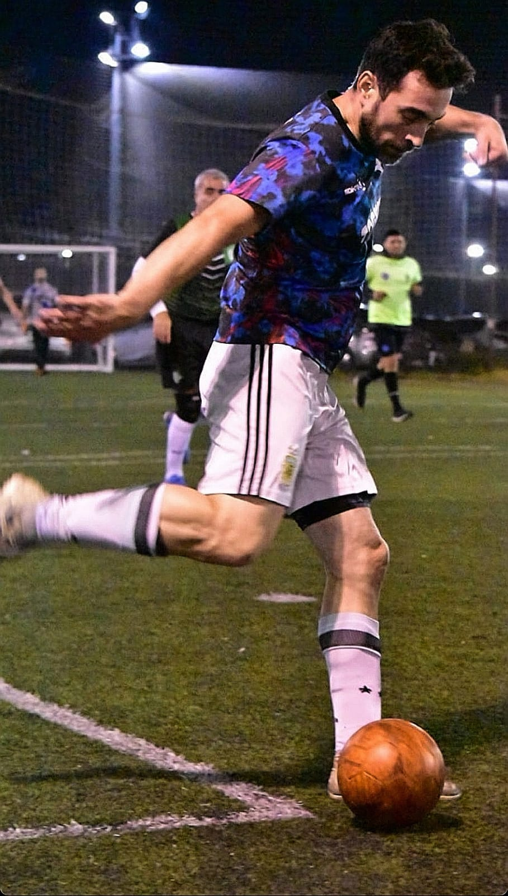
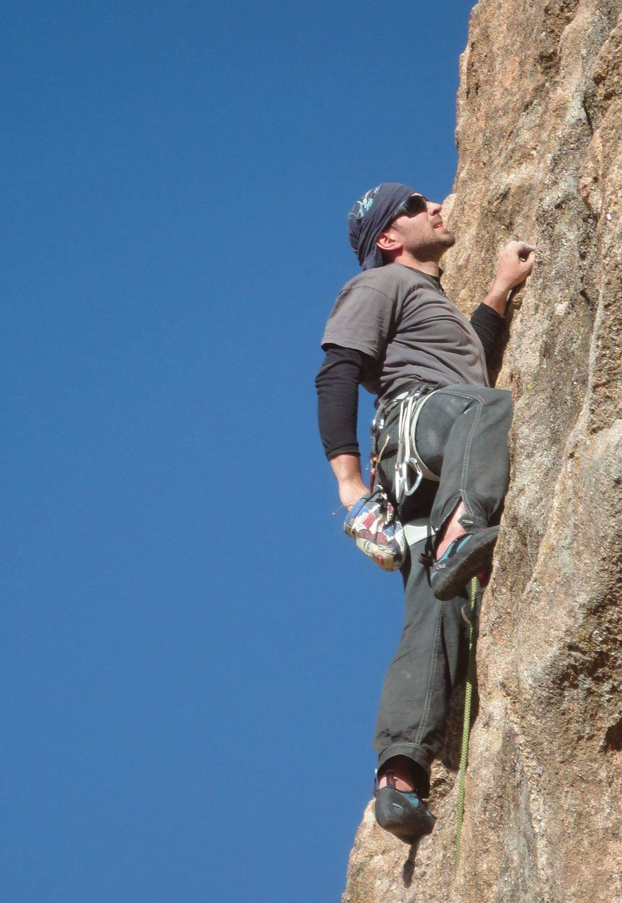
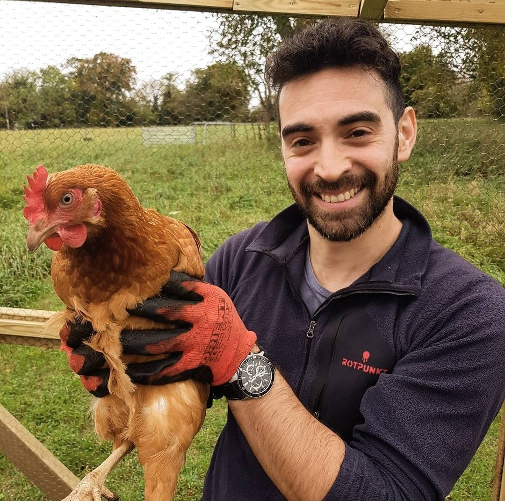

Con una sólida formación académica en Optica Oftálmica y una pasión innata por el deporte y la tecnología, a mis 39 años, casado y padre de dos hijos, he aprendido a equilibrar mi vida personal y profesional de manera efectiva, demostrando compromiso y responsabilidad en todas mis facetas. Mi experiencia en el taekwondo, donde he alcanzado el cinturón negro, así como mi dedicación al fútbol y al running, me han inculcado valores de disciplina, trabajo en equipo y perseverancia que aplico en todos los aspectos de mi vida. Además de mi formación académica y mis logros deportivos, soy un apasionado viajero y aventurero. La escalada deportiva es una de mis actividades favoritas, y aprovecho cualquier oportunidad para explorar nuevos destinos y desafiar mis límites. En mi tiempo libre, disfruto de actividades más tranquilas como la carpintería y la herrería, donde puedo expresar mi creatividad y habilidades manuales. Actualmente, estoy ampliando mis horizontes profesionales estudiando para convertirme en un Desarrollador Web Full Stack. Me emociona la perspectiva de combinar mis habilidades técnicas con mi pasión por la innovación y el aprendizaje continuo.
Juan Alberto Araujo


